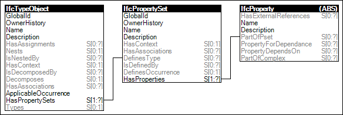

Link to this page
Link to this pageThe concept template Property Sets for Objects describes how an object type can be related to a single or multiple property sets. A property set contains a single or multiple properties. The data types of an individual property are single value, enumerated value, bounded value, table value, reference value, list value, and combination of property occurrences.
The property values assigned to an object type apply equally to all occurrences of this object type, see concept Object Typing, unless it is overriden by a property with same name within a property set with the same name at an individual object occurrence.
Figure 11 illustrates an instance diagram.
 |
Figure 11 — Property Sets for Types |